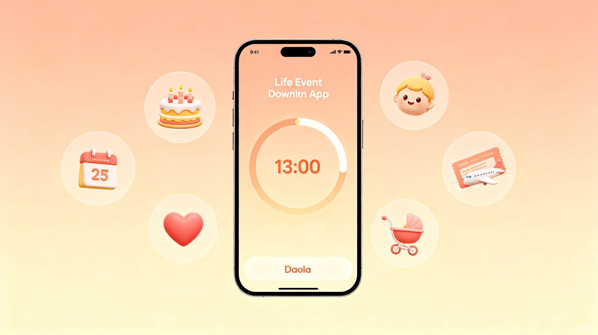
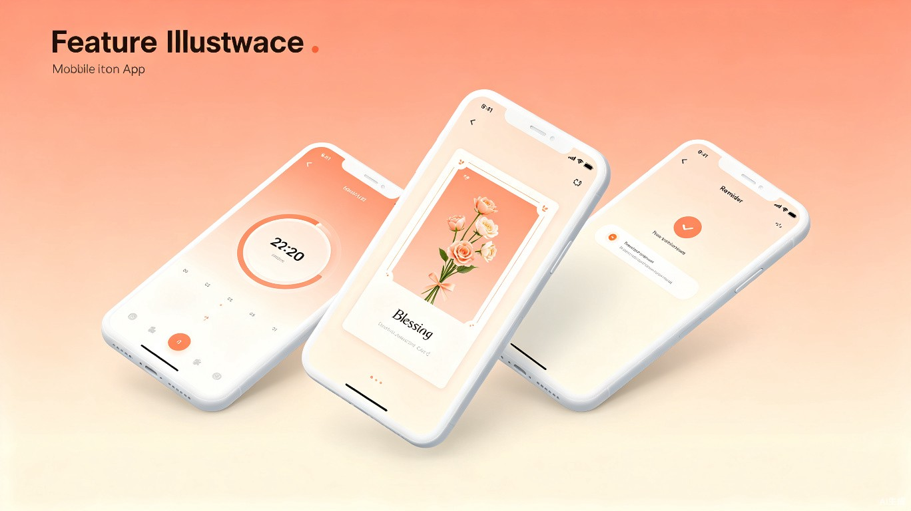

到啦
人生重要时刻记录与智能提醒工具
帮助用户不再错过任何一个重要日子，同时可随时回顾生命中的各类珍贵瞬间——无论是期待已久的未来时刻，还是值得铭记的过往回忆。

产品概览
「到啦」是一款极简、温暖、有仪式感的人生重要时刻记录与提醒工具。它打破了传统倒计时工具的冰冷体验，通过倒计时（未来事件）和正计时（过去事件）双模式，配合智能提醒、AI生成祝福文案、精美分享卡片等情感化功能，让每一个重要时刻都充满温度。
💡 创意起源
我们发现身边很多人经常忘记亲友生日、纪念日，而传统倒计时工具功能繁琐且缺乏情感温度。于是萌生了打造一款极简操作 + 情感共鸣 + 仪式感的记录工具的想法——让每一个日子都不再被遗忘。
目标用户与使用场景
| 用户群体 | 典型年龄 | 核心需求 | 使用场景 |
|---|---|---|---|
| 上班族 | 22 - 35 岁 | 记录纪念日、亲友生日、项目截止日 | 忙碌中不遗漏重要日子，提前准备礼物 |
| 高校学生 | 18 - 24 岁 | 倒计时考试、假期、毕业、恋爱纪念日 | 对重要节点充满期待感，记录青春时光 |
| 新手爸妈 | 25 - 40 岁 | 记录宝宝出生天数、成长里程碑 | 见证宝宝每一天成长，留存珍贵记忆 |
| 情感记录者 | 18 - 45 岁 | 记录恋爱天数、相识时长、人生经历 | 回顾生命轨迹，感受时间的意义 |
用户痛点分析
当前市场上的倒计时/提醒类工具普遍存在以下问题，导致用户无法获得理想的使用体验。
❌ 痛点一：操作繁琐
传统倒计时APP功能繁多、操作复杂，上手门槛高。用户需要经过多个步骤才能完成一个简单的事件添加，体验冰冷且低效。
✅ 到啦的方案：4步极简
仅需4步即可完成事件添加——打开APP、选择模式、填写信息、保存。极简设计大幅降低操作成本，零学习门槛。
❌ 痛点二：功能单一
市面工具仅支持倒计时，无法记录和回顾过往珍贵时刻。用户缺少一个统一平台来管理"过去"与"未来"。
✅ 到啦的方案：双模式引擎
支持倒计时（未来）+ 正计时（过去）双模式。既可以期待即将到来的日子，也可以回顾已经走过的时光。
❌ 痛点三：提醒滞后
提醒方式单一，仅当天提醒，用户来不及准备礼物或安排，错过最佳表达时机。
✅ 到啦的方案：智能提前提醒
支持自定义提前N天提醒，覆盖更多场景，帮助用户从容准备，不错过任何重要时刻。
❌ 痛点四：缺乏温度
工具属性单一，使用体验冰冷。没有情感化功能，无法赋予重要日子仪式感和纪念意义。
✅ 到啦的方案：情感化设计
AI生成专属祝福文案 + 一键生成精美分享卡片 + 农历本土化适配，让每个日子都有仪式感。
核心功能
「到啦」围绕"记录—提醒—分享"三大核心链路，构建完整的功能体系。

⏳ 双模式计时引擎
- 倒计时模式 — 记录考试、旅行、节日等重要未来日子的精确倒计时，支持公历/农历双向切换
- 正计时模式 — 记录宝宝出生时长、恋爱相处天数、人生里程碑等珍贵时刻的持续计时
- 农历智能适配 — 自动推算年度农历日期，解决本土化日期记录痛点，再也不怕农历生日搞错
🔔 智能提醒系统
- 多级提醒 — 自定义提前1天、3天、7天、15天等灵活提醒周期
- 多渠道推送 — APP推送通知 + 微信服务号提醒，双保险不遗漏
- 温情文案召回 — 提醒内容附带情感化文案，不仅提醒时间，更传递温度
🤖 AI 智能文案
- 专属祝福生成 — 基于事件类型与关系亲疏，AI自动生成个性化祝福文案
- 风格多样 — 支持温馨、幽默、文艺、正式等多种文案风格，满足不同场景需求
- 一键编辑 — 生成的文案支持自由编辑，用户可在此基础上加入个人情感
🎈 精美分享卡片
- 模板丰富 — 内置多种精美卡片模板，适配生日、纪念日、节日等不同场景
- 一键生成 — 倒计时数据 + AI文案 + 精美模板，一键生成可分享的仪式感卡片
- 多平台分享 — 支持保存至相册、分享至微信/朋友圈/微博等社交平台
💕 双人情感共享
- 共享计时 — 恋爱天数、距离见面倒计时等，邀请对方共同关注
- 互动提醒 — 重要的共同纪念日双方都会收到提醒，强化情感连接
- 回忆时间线 — 共同记录的重要时刻自动生成时间线，回顾温馨过往
产品使用流程
从打开APP到完成一个事件记录，仅需4步，极致简洁。
打开APP，选择模式
在首页选择「倒计时」或「正计时」模式，快速进入对应功能界面。
填写事件信息
输入事件名称、选择日期（支持公历/农历切换）、设置提醒规则、选择分类标签。
保存并生成卡片
保存事件后，系统自动生成精美的倒计时/正计时展示卡片，可一键分享。
智能提醒，不错过
系统按照设定时间自动推送提醒，并附带AI生成的祝福文案，传递温暖。
价值与意义
📈 商业价值
聚焦用户情感需求，打造差异化竞争优势。通过极简操作 + 农历本土化适配 + 双人情感共享 + AI文案卡片的组合拳，建立独特产品心智。精准节点推送与温情文案召回用户，依托双人共享社交属性强化情感连接，提升复访率和留存。
⚡ 效率提升
4步极简完成事件添加，大幅降低操作成本。支持公历/农历双向切换，自动推算年度日期，解决本土化日期记录痛点。智能提醒支持自定义提前N天提醒，帮助用户从容准备。
技术方案概览
产品覆盖iOS、Android、微信小程序三端，采用跨平台技术方案，确保一致的用户体验。
| 技术维度 | 方案选型 | 说明 |
|---|---|---|
| 移动端框架 | Flutter / React Native | 跨平台统一开发，一套代码覆盖iOS与Android |
| 微信小程序 | 原生小程序开发 | 依托微信生态，降低用户获取与使用门槛 |
| 后端服务 | Node.js / Go | 高并发提醒推送，低延迟响应 |
| 数据库 | PostgreSQL + Redis | 关系型存储 + 缓存，保障数据一致性与性能 |
| AI 文案服务 | 大语言模型 API | 基于事件类型与用户画像生成个性化祝福文案 |
| 消息推送 | APNs / FCM / 微信模板消息 | 三端统一的消息推送能力 |
| 图片生成 | 服务端渲染 + 模板引擎 | 基于模板动态生成精美分享卡片 |
产品愿景
"让每一个重要的日子都不被遗忘，让每一份珍贵的情感都有处安放。" —— 到啦产品团队
「到啦」的终极愿景是成为用户生活中最温暖的时间伴侣。我们相信，时间本身没有温度，但记录时间的方式可以有。通过极简的设计、智能的技术、温暖的体验，让用户在每一次查看倒计时、回顾纪念日时，都能感受到生活的美好与仪式感。
未来，「到啦」还将拓展更多可能性——
- 全球化适配 — 支持更多语言与文化节日，服务全球用户
- 时间数据分析 — 可视化展示用户生命中的重要时刻分布
- 社区互动 — 同一天生日/纪念日的用户可以互相祝福
- 智能硬件联动 — 与桌面日历、电子相框等设备联动，时刻陪伴